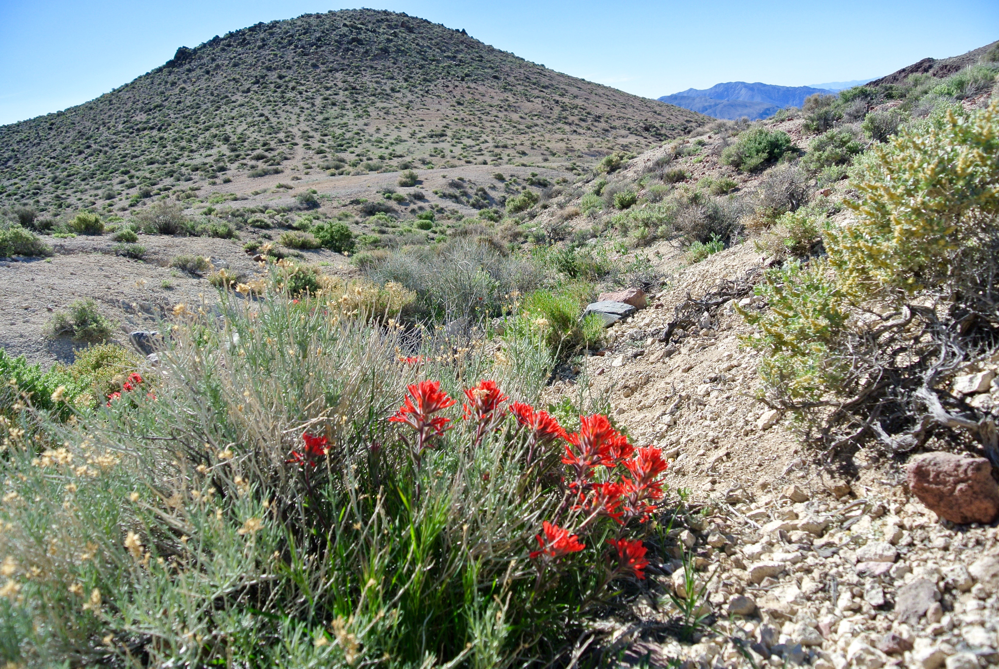
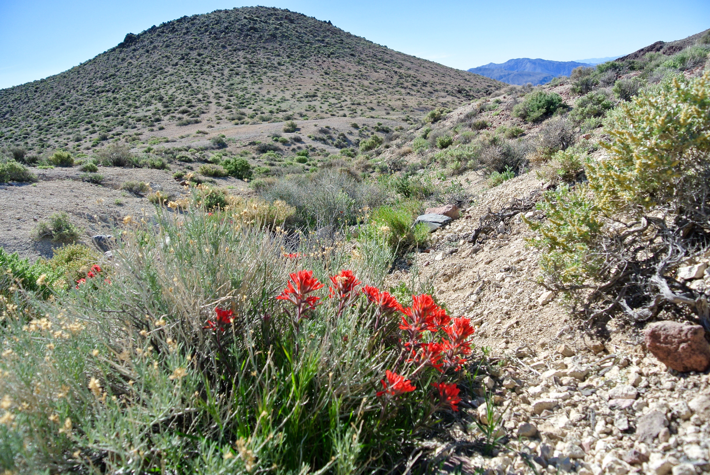

About me


 

I'm a PhD Candidate at UC Berkeley.
As a biology graduate student, my interest in science is a given. I love learning about the natural world and I love asking questions that no one has answered (or even asked!) yet. I am most fascinated by the very small; those organisms that are easily overlooked by macrobes like ourselves. I am also excited by extremophiles: those that can survive and thrive in conditions thought to be difficult for life itself. I find these interests come together in studying dryland mosses. These small plants have found a way to only truly ‘live’ when conditions are right (that is, when enough water is present), and dry out to go completely quiescent, or dormant, when water is absent. For desert mosses, that is most of the time! Yet, seemingly miraculously, dryland mosses are able to quickly begin to grow and thrive again, while recovering from damages that accumulated while they were desiccated and dormant. I find this process inspiring and it intrigues me to think about the evolutionary, both micro and macro, implications of this lifestyle.
I'm an artist.
I've loved to paint and draw for as long as I can remember. As a high school student I went back-and-forth for a long time, trying to decide to go to art school or to pursue science. Ultimately, I chose to major in biology and head towards a career in research. However I still take art classes when I can and continue to paint as a hobby.